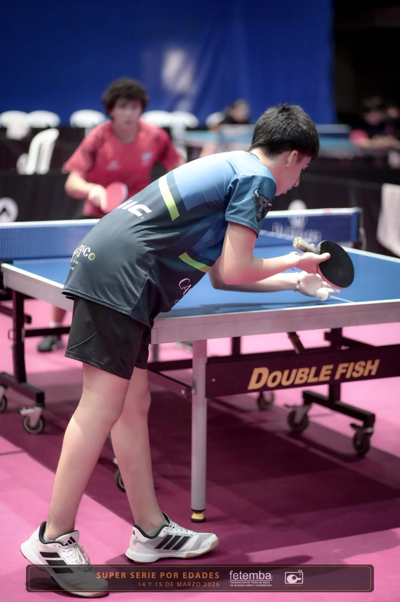
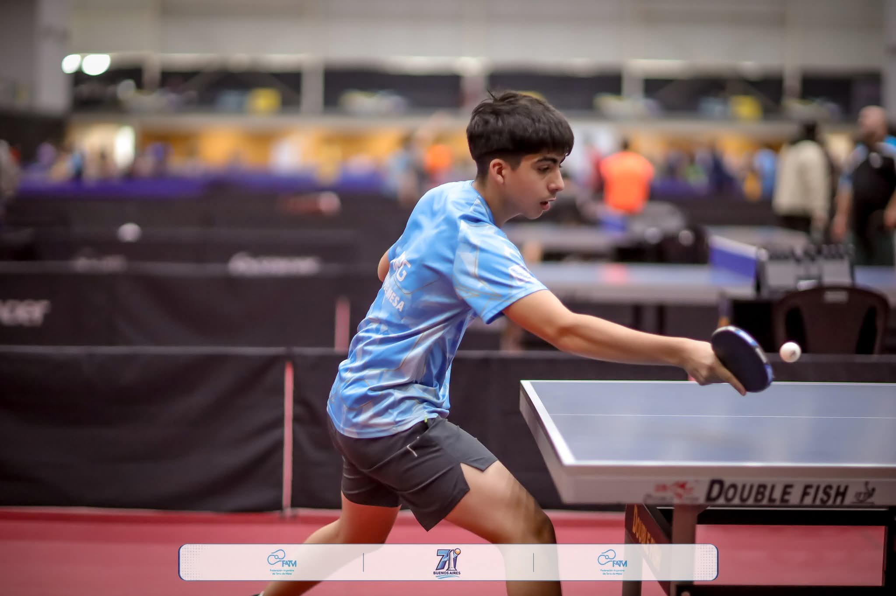

Clases particulares, individuales y personalizadas — trabajamos lo que vos realmente necesitás mejorar.
Escribime por WhatsAppJuego al tenis de mesa y compito frecuentemente en torneos en Junín, Pergamino, Rosario y Buenos Aires. Compito en categoría 2da en TMT y 1ra FETEMBA.
Me enfoco mucho en el entrenamiento técnico, es algo que vengo trabajando intensamente. Las clases que doy son particulares, individuales y personalizadas — las adapto a cada jugador.

Las clases son individuales, nada de grupos. Me enfoco en lo que vos necesitás mejorar. Si sos principiante o si ya jugás hace tiempo, da igual — lo que importa es avanzar desde donde estás.
No hay una lista fija. Trabajo lo que cada jugador necesita. Si algo ya te sale bien, lo pulimos
Tambien te puedo decir como entrenar en tu club lo que te falta o como pulir lo que ya te sale
(No trabajamos preparación física)

Lo primero que hago siempre es escuchar. Quiero que el jugador me cuente qué le cuesta, qué le gustaría mejorar, cómo viene jugando.
Después hacemos un peloteo simple — ahí ya puedo detectar errores, ver cómo se mueve, cómo golpea. Empezamos a corregir desde ahí con ejercicios básicos.
Las clases las doy en un espacio propio, tranquilo y sin distracciones. Está pensado para entrenar con atención, sin apuros y sin que nadie moleste.
Los horarios no son fijos. Vos me proponés el día y el horario que mejor te queda, y yo te confirmo según disponibilidad.
Si querés consultar por clases o por el análisis de juego, escribime directamente por WhatsApp.
Escribime por WhatsApp